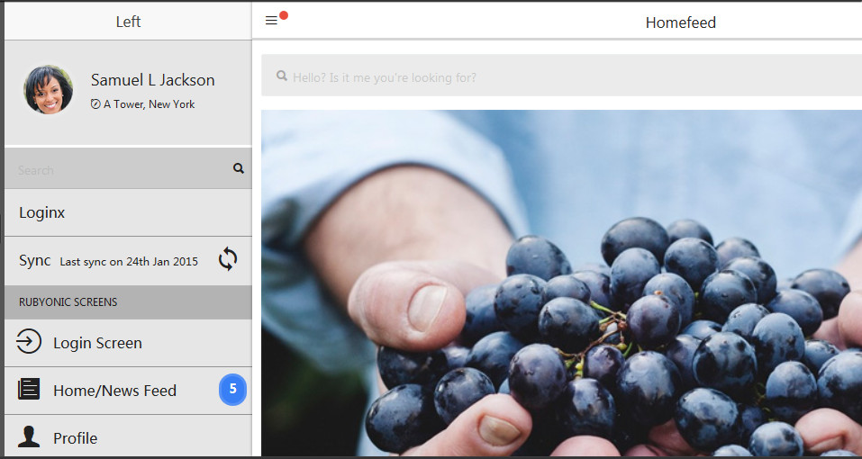
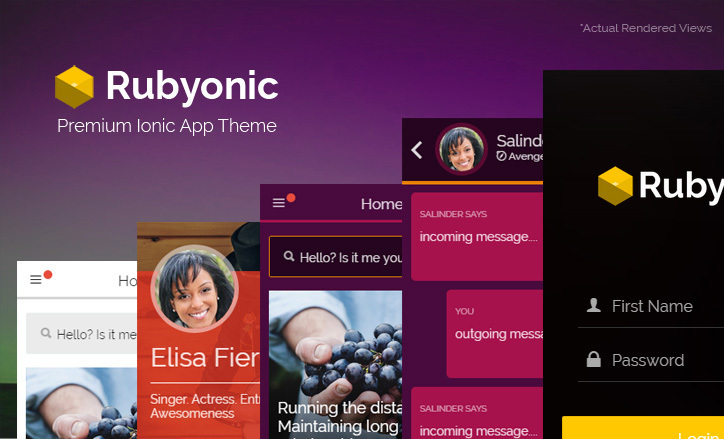
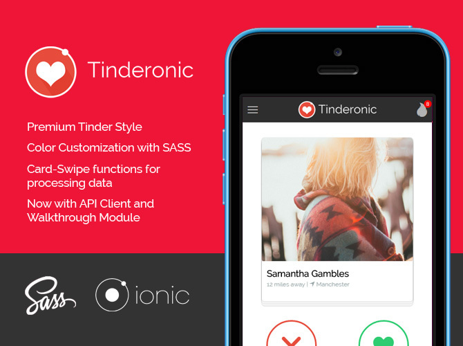
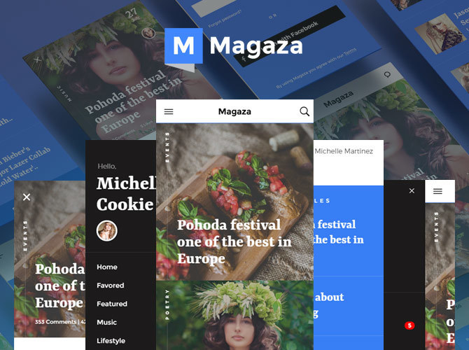
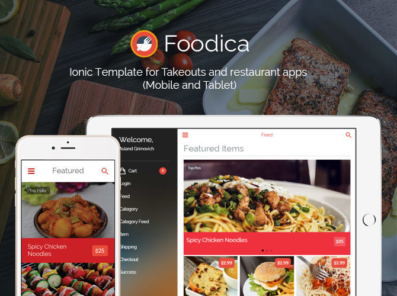

<html>
<head>
    <meta charset="utf-8">
    <meta name="viewport" content="initial-scale=1, maximum-scale=1, user-scalable=no, width=device-width">
    <link href="lib/css/ionic.min.css" rel="stylesheet">
    <script src="lib/js/ionic.bundle.js"></script>
    <script src="js/app.js"></script>


</head>
<body ng-app="starter">
<ion-nav-view></ion-nav-view>

<script id="menu.html" type="text/ng-template">
    <ion-side-menus enable-menu-with-back-views="false">
        <ion-side-menu-content >
            <ion-nav-bar class="bar-stable">
                <ion-nav-back-button>
                </ion-nav-back-button>

                <ion-nav-buttons side="left">

                    <button class="button button-icon" menu-toggle="left">
                        <span class="menuButton" ng-class="$ionicSideMenuDelegate.isOpen() ? 'menu-arrowButton' : 'arrow-menuButton'"  ></span>
                    </button>

                </ion-nav-buttons>
            </ion-nav-bar>
            <ion-nav-view name="menuContent"></ion-nav-view>
        </ion-side-menu-content>

        <ion-side-menu side="left">


            <ion-header-bar class="bar-stable">
                <h1 class="title">Left</h1>
            </ion-header-bar>
            <ion-content class="menu-screen">


                <!-- Profile Section -->
                <div class="profile-box">
                    
                    <div class="profile-box-details">
                        <h4 class="profile-name brand-base-text-color">Samuel L Jackson</h4>
                        <h6 class="profile-location brand-base-text-color"><i class="ion-compass"></i> A Tower, New York</h6>
                    </div>
                    <i class="profile-settings-icons"></i>
                </div>
                <!-- End Profile Section -->

                <!-- Search Box -->
                <div class="list menu-screen-searchbox">
                    <label class="item item-input">
                        <input type="text" placeholder="Search" class="text-color-contrast">
                        <i class="icon ion-search placeholder-icon"></i>
                    </label>
                </div>
                <!-- End Search Box -->

                <ion-list>
                    <ion-item nav-clear menu-close href="#">
                        Loginx
                    </ion-item>
                    <ion-item nav-clear menu-close href="#" class="item item-icon-right">
                        Sync
                  <span class="item-note brand-base-text-color">
                    Last sync on 24th Jan 2015
                  </span>
                        <i class="icon ion-android-sync"></i>
                    </ion-item>
                </ion-list>

                <!-- Group Header -->
                <h6 class="group-header">Rubyonic Screens</h6>
                <!-- End Group Header -->


                <ion-list>
                    <ion-item nav-clear menu-close href="#" class="item item-icon-left brand-base-text-color">
                        <i class="icon ion-log-in"></i>
                        Login Screen
                    </ion-item>
                    <ion-item nav-clear menu-close href="#" class="item item-icon-left brand-base-text-color">
                        <i class="icon ion-ios-paper"></i>
                        Home/News Feed
                        <span class="badge badge-positive">5</span>
                    </ion-item>
                    <ion-item nav-clear menu-close href="#" class="item item-icon-left brand-base-text-color">
                        <i class="icon ion-person"></i>
                        Profile
                    </ion-item>
                    <ion-item nav-clear menu-close href="#"" class="item item-icon-left brand-base-text-color">
                    <i class="icon ion-document"></i>
                    View Post/Article
                    </ion-item>
                    <ion-item nav-clear menu-close href="#"" class="item item-icon-left brand-base-text-color">
                    <i class="icon ion-chatbubbles"></i>
                    Chat UI
                    </ion-item>
                    <ion-item nav-clear menu-close href="#" class="item item-icon-left brand-base-text-color">
                        <i class="icon ion-ios-list"></i>
                        Form UI
                    </ion-item>
                </ion-list>


            </ion-content>
        </ion-side-menu>
    </ion-side-menus>
</script>

<script id="feed.html" type="text/ng-template">
    <!-- Feed Screen - Refer to feed.scss -->
    <ion-view view-title="Home-Feed" hide-nav-bar="true" class="rubyonic-pane feed-screen">
        <!-- Custom Header:
        We did this so we could have a custom bar without
        altering ionic's state/history management.
        Use with 'hide-nav-bar="true"' attribute at line 1: -->
        <div class="bar bar-ruby-header bar-transparent">
            <button class="button ruby-button-clear icon ion-navicon brand-base-text-color" menu-toggle="left">
                <span class="new-notification-bubble"></span>
            </button>
            <h1 class="title brand-base-text-color">Homefeed</h1>
            <button class="button ruby-button-clear icon ion-android-notifications brand-base-text-color" menu-toggle="right"></button>
        </div>
        <!-- End Custom navbar -->
        <ion-content class="has-header">

            <div class="padding feed ruby">

                <div class="list list-inset form-rb">
                    <label class="item item-input">
                        <i class="icon ion-search placeholder-icon"></i>
                        <input type="text" class="text-color-contrast" placeholder="Hello? Is it me you're looking for?">
                    </label>
                </div>

                <div class="feed-item">
                    <div class="feed-media">
                        
                        <div class="feed-gradient-overlay"></div>
                        <h4 class="feed-title">Running the distance: Maintaining long distance relationships</h4>
                    </div>
                    <div class="feed-item-details">
                        <div class="feed-stat brand-base-text-color">4 Comments</div> <div class="feed-stat brand-base-text-color">300 Likes</div>
                    </div>
                </div>

                <div class="feed-item">
                    <div class="feed-media">
                        
                        <div class="feed-gradient-overlay"></div>
                        <h4 class="feed-title">Playing the guitar for beginners</h4>
                    </div>
                    <div class="feed-item-details--poster-type">
                        
                        <h5 class="feed-posted-by brand-base-color">Posted by Linsey</h5>
                        <h5 class="feed-time-post brand-base-color"><i class="ion-android-time "></i> 1h</h5>
                    </div>
                </div>

                <div class="feed-item">
                    <div class="feed-media">
                        
                        <div class="feed-gradient-overlay"></div>
                        <h4 class="feed-title">Top antioxidants for your morning workout</h4>
                    </div>
                    <div class="feed-item-details">
                        <div class="feed-stat brand-base-text-color">4 Comments</div> <div class="feed-stat brand-base-text-color">300 Likes</div>
                    </div>
                </div>

            </div>

        </ion-content>
    </ion-view>

</script>

<script id="search.html" type="text/ng-template">
    <ion-view view-title="Search">
        <ion-content>
            <h1>Search</h1>
        </ion-content>
    </ion-view>
</script>
</body>
</html>
